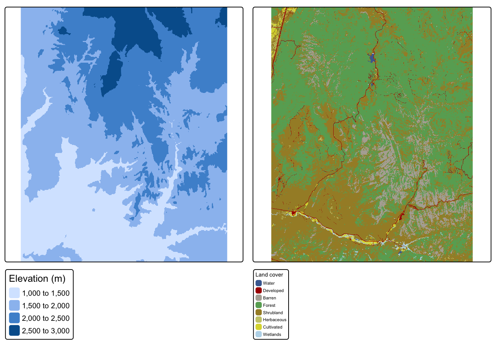
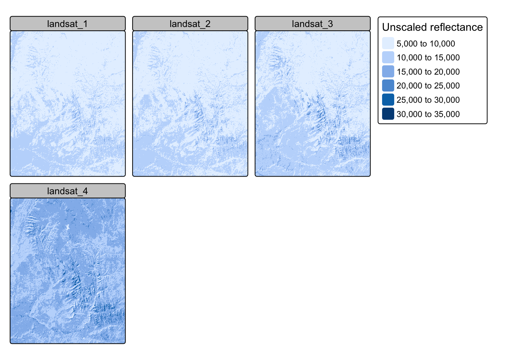
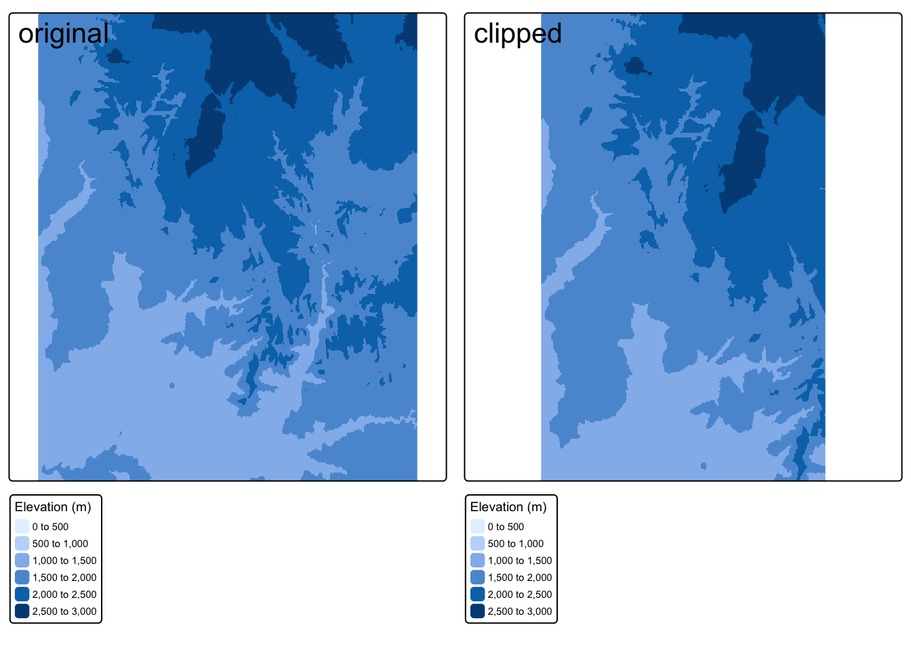
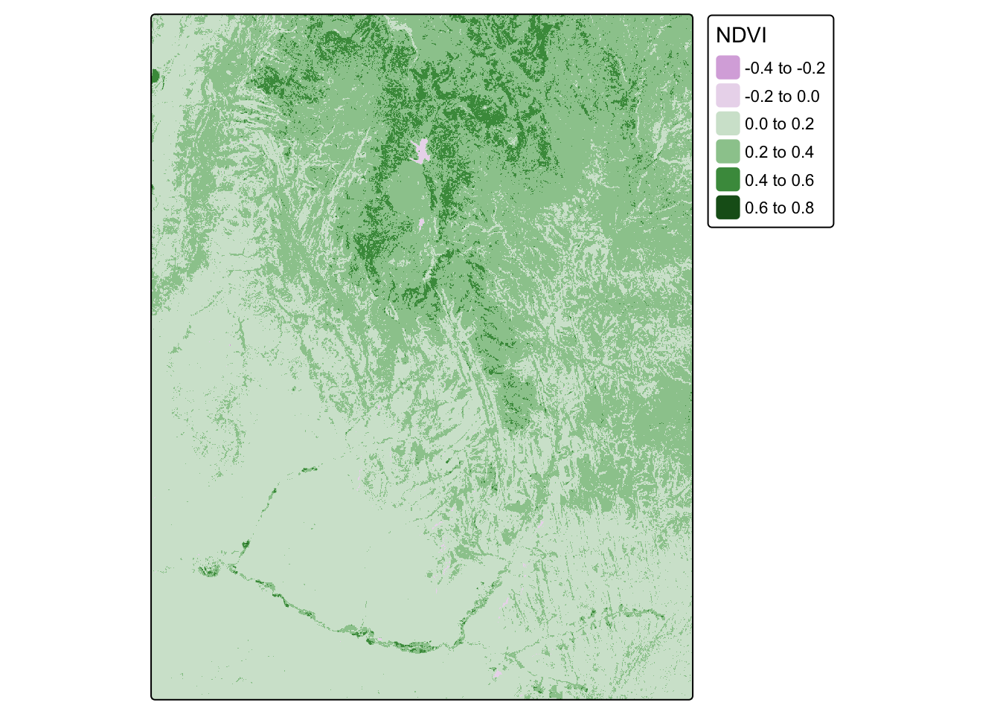
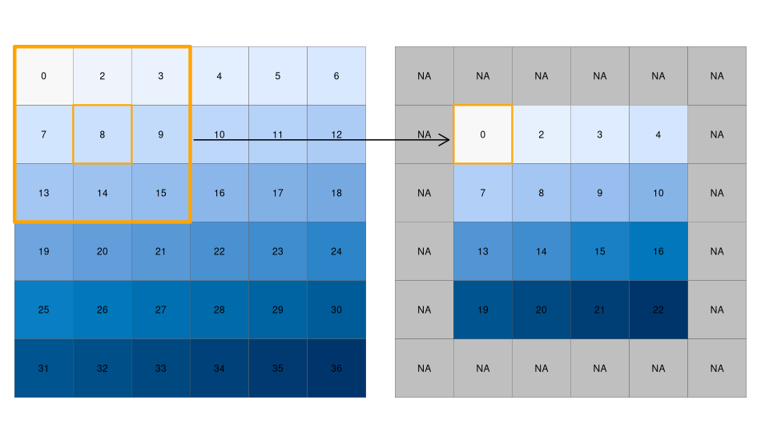
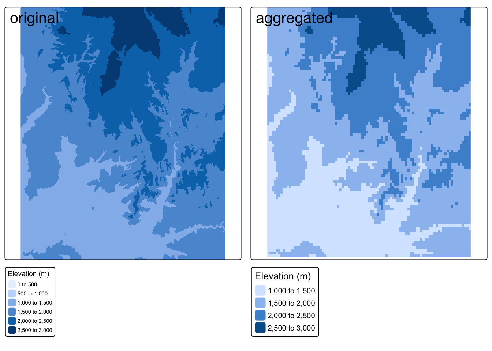

Source Materials
The following materials are modified from Chapters 3, 4, and 5 of Geocomputation with R by Robin Lovelace.
In this lab we’ll be exploring the basics of raster data, including spatial data and geometry operations. Raster data represents continuous surfaces, as opposed to the discrete features represented in the vector data model. We’ll primarily be working with data from Zion National Park in Utah.
Spatial data operations
1. Set Up
First, let’s install the {geoData} package which we’ll use later in the lab to get access to example datasets.
install.packages("geoData")Now let’s load all the necessary packages. R has several packages for handling raster data. In this lab, we’ll use the {terra} package.
library(terra) # raster handling
library(tidyverse)
library(tmap) # map making
library(kableExtra) # table formatting
library(spData) # spatial data
library(spDataLarge) # spatial data
library(geodata) # spatial data2. Raster objects
In this section we’ll learn how to create raster data objects by reading in data and how to do basic data manipulations.
Creating raster objects
The {terra} package represents raster objects using the SpatRaster class. The easiest way to create SpatRaster objects is to read them in using the rast() function. Raster objects can handle both continuous and categorical data.
We’ll start with an example of two datasets for Zion National Park from the spDataLarge package:
srtm.tif: remotely sensed elevation estimates (continuous data)nlcd.tif: simplified version of the National Land Cover Database 2011 product (categorical data)
# create raster objects
zion_elevation <- rast(system.file("raster/srtm.tif", package = "spDataLarge"))
zion_land <- rast(system.file("raster/nlcd.tif", package = "spDataLarge"))
# test class of raster object
class(zion_elevation)[1] "SpatRaster"
attr(,"package")
[1] "terra"Code
map1 <- tm_shape(zion_elevation) +
tm_raster(title = "Elevation (m)") +
tm_layout(legend.outside = TRUE)
map2 <- tm_shape(zion_land) +
tm_raster(title = "Land cover") +
tm_layout(legend.outside = TRUE)
tmap_arrange(map1, map2, nrow = 1)
The SpatRaster class can also handle multiple “layers”. Layers can store different variables for the same region in one object. This is similar to attributes (or columns) in data.frames. Later in the course when we discuss multispectral data, we’ll learn more about why remotely-sensed data will often contain multiple “bands” or layers.
As an example, we’ll load a dataset from spDataLarge containing the four bands of the Landsat 8 image for Zion National Park.
landsat <- rast(system.file("raster/landsat.tif", package = "spDataLarge"))
nlyr(landsat) # test number of layers in raster object[1] 4Code
tm_shape(landsat) +
tm_raster(title = "Unscaled reflectance")
We can subset layers using either the layer number or name:
landsat3 <- subset(landsat, 3)
landsat4 <- subset(landsat, "landsat_4")We can combine SpatRaster objects into one, using c():
landsat34 <- c(landsat3, landsat4)Merging Rasters
In some cases, data for a region will be stored in multiple, contiguous files. To use them as a single raster, we need to merge them.
In this example, we download elevation data for Austria and Switzerland and merge the two rasters into one.
austria <- geodata::elevation_30s(country = "AUT", path = tempdir())
switzerland <- geodata::elevation_30s(country = "CHE", path = tempdir())
merged <- merge(austria, switzerland)Code
map1 <- tm_shape(austria) +
tm_raster(title = "Elevation (m)") +
tm_layout(main.title = "Austria")
map2 <- tm_shape(switzerland) +
tm_raster(title = "Elevation (m)") +
tm_layout(main.title = "Switzerland")
map3 <- tm_shape(merged) +
tm_raster(title = "Elevation (m)") +
tm_layout(main.title = "Merged")
tmap_arrange(map1, map2, map3, nrow = 1) Inspecting raster objects
We can get info on raster values just by typing the name or using the summary function.
summary(zion_elevation)Warning: [summary] used a sample srtm
Min. :1024
1st Qu.:1535
Median :1836
Mean :1843
3rd Qu.:2114
Max. :2892 We can get global summaries, such as standard deviation.
global(zion_elevation, sd) sd
srtm 416.6776Or we can use freq() to get the counts with categories.
freq(zion_land) layer value count
1 1 Water 1209
2 1 Developed 17517
3 1 Barren 106070
4 1 Forest 767537
5 1 Shrubland 545771
6 1 Herbaceous 4878
7 1 Cultivated 8728
8 1 Wetlands 6497Indexing
We can index rasters using row-column indexing or cell IDs.
# row 1, column 1
zion_elevation[1, 1] srtm
1 1728# cell ID 1
zion_elevation[1] srtm
1 1728For multi-layer rasters, subsetting returns the values in both layers.
landsat[1] landsat_1 landsat_2 landsat_3 landsat_4
1 9833 9579 9861 14114We can also modify/overwrite cell values.
zion_elevation[1, 1] <- 0
zion_elevation[1, 1] srtm
1 0Replacing values in multi-layer rasters requires a matrix with as many columns as layers and rows as replaceable cells.
landsat[1] <- cbind(c(0), c(0),c(0), c(0))
landsat[1] landsat_1 landsat_2 landsat_3 landsat_4
1 0 0 0 0We can also use a similar approach to replace values that we suspect are incorrect.
test_raster <- zion_elevation
test_raster[test_raster < 20] <- NA3. Spatial subsetting
We can move from subsetting based on specific cell IDs to extract info based on spatial objects.
To use coordinates for subsetting, we can “translate” coordinates into a cell ID with the functions terra::cellFromXY() or terra::extract().
# create point within area covered by raster
point <- matrix(c(-113, 37.5), ncol = 2)
# approach 1
# find cell ID for point
id <- cellFromXY(zion_elevation, xy = point)
# index to cell
zion_elevation[id] srtm
1 2398# approach 2
# extract raster values at point
terra::extract(zion_elevation, point) srtm
1 2398We can also subset raster objects based on the extent another raster object. Here we extract the values of our elevation raster that fall within the extent of a clipping raster that we create.
# create a raster with a smaller extent
clip <- rast(xmin = -113.3, xmax = -113, ymin = 37.2, ymax = 37.9,
resolution = 0.3,
vals = 1)
# select values that fall within smaller extent
zion_elevation_clip <- zion_elevation[clip]
# verify that output has fewer values than original
if(ncell(zion_elevation) == nrow(zion_elevation_clip)) {
warning("clipping did not remove cells")
} else {
print("clipping removed cells")
}[1] "clipping removed cells"In the previous example, we just got the values of the raster back (and lost the raster format). In some cases, we might want the output to be the raster cells themselves.
We can do this use the “[” operator and setting “drop = FALSE”.
zion_elevation_clip <- zion_elevation[clip, drop = FALSE]Code
map1 <- tm_shape(zion_elevation) +
tm_raster(title = "Elevation (m)") +
tm_layout(main.title = "original")
map2 <- tm_shape(zion_elevation_clip) +
tm_raster(title = "Elevation (m)") +
tm_layout(main.title = "clipped")
tmap_arrange(map1, map2, nrow = 1) 
Woops, is the clipped version really smaller?
Plotting side-by-side, the clipped version appears to take up more space – does this mean the clipping didn’t work? How can we tell?
- Visually: If we look at the features represented, we can see that the clipped version doesn’t represent all the features present in the original version.
- Quantitatively: We can directly check whether the extents match using the
ext()function!
if(ext(zion_elevation) == ext(zion_elevation_clip)){
print("extents match")
} else{
print("extents do not match")
}[1] "extents do not match"In the previous example, we subsetted the extent of the raster (removed cells). Another common use of spatial subsetting is to select cells based on their values. In this case we create a “masking” raster comprised of logicals or NAs that dictates the cells we would like to preserve.
# create raster mask of the same resolution and extent
rmask <- zion_elevation
# set all cells with elevation less than 2000 meters to NA
rmask[rmask < 2000] <- NA
# subset elevation raster based on mask
# approach 1: bracket subsetting
masked1 <- zion_elevation[rmask, drop = FALSE]
# approach 2: mask() function
masked2 <- mask(zion_elevation, rmask) Code
map1 <- tm_shape(zion_elevation) +
tm_raster(title = "Elevation (m)") +
tm_layout(main.title = "original")
map2 <- tm_shape(masked1) +
tm_raster(title = "Elevation (m)") +
tm_layout(main.title = "bracket subsetting")
map3 <- tm_shape(masked2) +
tm_raster(title = "Elevation (m)") +
tm_layout(main.title = "mask()")
tmap_arrange(map1, map2, map3, nrow = 1) 4. Map algebra
“Map algebra” is the set of operations that modify or summarize raster cell values with reference to surrounding cells, zones, or statistical functions that apply to every cell. Map algebra is typically categorized into local, focal, and zonal operations.
Local operations
Local operations are computed on each cell individually. For example, we can use ordinary arithmetic or logical statements.
zion_elevation + zion_elevation # doubles each cells' value
zion_elevation^2 # raises each cells' value to the power of 2
log(zion_elevation) # takes the log of each cells' value
zion_elevation > 5 # determines whether each cell has a value greater than 5We can also classify intervals of values into groups. For example, we could classify elevation into low, middle, and high elevation cells.
First, we need to construct a reclassification matrix:
- The first column corresponds to the lower end of the class
- The second column corresponds to the upper end of the class
- The third column corresponds to the new value for the specified ranges in columns 1 and 2
# create reclassification matrix
rcl <- matrix(c(1000, 1500, 1, # group 1 ranges from 1000 - 1500 m
1500, 2000, 2, # group 2 ranges from 1500 - 2000 m
2000, 2500, 3, # group 3 ranges from 2000 - 2500 m
2500, 3000, 4), # group 4 ranges from 2500 - 3000 m
ncol = 3, byrow = TRUE)
# use reclassification matrix to reclassify elevation raster
reclassified <- classify(zion_elevation, rcl = rcl)
# change reclassified values into factors
values(reclassified) <- as.factor(values(reclassified))Code
map1 <- tm_shape(zion_elevation) +
tm_raster(title = "Elevation (m)") +
tm_layout(main.title = "original")
map2 <- tm_shape(reclassified) +
tm_raster(title = "Elevation (m)") +
tm_layout(main.title = "reclassified")
tmap_arrange(map1, map2, nrow = 1) For more efficient processing, we can use a set of map algebra functions:
app()applies a function to each cell of a raster to summarize the values of multiple layers into one layertapp()is an extension ofapp()that allows us to apply on operation on a subset of layerslapp()allows us to apply a function to each cell using layers as arguments
We can use the lapp()function to compute the Normalized Difference Vegetation Index (NDVI). (More on this later in the quarter!) Let’s calculate NDVI for Zion National Park using multispectral satellite data.
First, we need to define a function to calculate NDVI. Then, we can use lapp() to calculate NDVI in each raster cell. To do so, we just need the NIR and red bands.
# define NDVI as the normalized difference between NIR and red bands
ndvi_fun <- function(nir, red){
(nir - red) / (nir + red)
}
# apply NDVI function to Landsat bands 3 & 4
ndvi_rast <- lapp(landsat[[c(4, 3)]], fun = ndvi_fun)Code
tm_shape(ndvi_rast) +
tm_raster(title = "NDVI")
Focal Operations
Local operations operate on one cell, though from multiple layers. Focal operations take into account a central (focal) cell and its neighbors. The neighborhood (or kernel, moving window, filter) can take any size or shape. A focal operation applies an aggregation function to all cells in the neighborhood and updates the value of the central cell before moving on to the next central cell.
The image below provides an example of using a moving window filter. The large orange square highlights the 8 cells that are considered “neighbors” to the central cell (value = 8). Using this approach, the value of the central cell will be updated to the minimum value of its neighboring cells (in this case 0). This process then repeats for each cell.

Critical thinking
Why are the cells on the border in the filtered raster now have values of NA?
The cells along the border do not have a complete set of “neighbors”, therefore the filtering operation returns a NA.
We can use the focal() function to perform spatial filtering. We define the size, shape, and weights of the moving window using a matrix. In the following example we’ll find the minimum value in 9x9 cell neighborhoods.
elevation_focal <- focal(zion_elevation,
w = matrix(1, nrow = 9, ncol = 9), # create moving window
fun = min) # function to map new valuesCode
map1 <- tm_shape(zion_elevation) +
tm_raster(title = "Elevation (m)") +
tm_layout(main.title = "original")
map2 <- tm_shape(elevation_focal) +
tm_raster(title = "Elevation (m)") +
tm_layout(main.title = "aggregated")
tmap_arrange(map1, map2, nrow = 1) 
Critical thinking
What should we expect to observe in the output for this spatial filtering example?
- Overall, we see more lower values because we are finding the minimum value in each neighborhood
- The output looks “grainier” because many cells have the same values as their neighbors
Zonal Operations
Similar to focal operations, zonal operations apply an aggregation function to multiple cells. However, instead of applying operations to neighbors, zonal operations aggregate based on “zones”. Zones can are defined using a categorical raster and do not necessarily have to be neighbors
For example, we could find the average elevation for within the elevations zones we created.
zonal(zion_elevation, reclassified, fun = "mean") %>%
kable(col.names = c("Elevation zone", "Mean elevation (m)")) %>%
kable_styling(bootstrap_options = "striped")| Elevation zone | Mean elevation (m) |
|---|---|
| 0 | 0.000 |
| 1 | 1292.281 |
| 2 | 1771.967 |
| 3 | 2222.776 |
| 4 | 2640.340 |
Geometry Operations
When merging or performing map algebra, rasters need to match in their resolution, projection, origin, and/or extent
1. Changing extent, origin, and resolution
Extent
In the simplest case, two images differ only in their extent. Let’s start by increasing the extent of a elevation raster.
elev_2 <- extend(zion_elevation, c(1, 200)) # add one row and two columnsPerforming algebraic operations on objects with different extents doesn’t work.
elev + elev_2We can align the extent of the 2 rasters using the extend() function. Here we extend the zion_elevation object to the extent of elev_2 by adding NAs.
elev_3 <- extend(zion_elevation, elev_2)Origin
The origin function returns the coordinates of the cell corner closes to the coordinates (0,0).
origin(zion_elevation)[1] -0.0004165537 -0.0004165677Resolution
Raster datasets can also differ in their resolution. To match resolutions we can decrease (or coarsen) the resolution by aggregating or increase (or sharpen) the resolution by disaggregating.
Aggregating
When decreasing the resolution of rasters, we are effectively combining multiple celss into a single cell. Let’s start by coarsening the resolution of the Zion elevation data by a factor of 5, by taking the mean value of cells.
zion_elevation_coarse <- aggregate(zion_elevation, fact = 5, fun = mean)Code
map1 <- tm_shape(zion_elevation) +
tm_raster(title = "Elevation (m)") +
tm_layout(main.title = "original")
map2 <- tm_shape(zion_elevation_coarse) +
tm_raster(title = "Elevation (m)") +
tm_layout(main.title = "aggregated")
tmap_arrange(map1, map2, nrow = 1) 
Critical thinking
What should we observe in the output?
The aggregated raster appears “grainier” because the cells are now larger. This is the same concept as having a more pixelated image.
Disaggregating
To increase the resolution of a raster, we need to break a single cell into multiple cells. There are many ways to do this and the appropriate method will often depend on our specific purpose. However, most approaches define the values of the new (smaller) cells based on not only the value of the original cell they came from, but also neighboring cells.
In the example below, we use the bilinear method to disaggregate the elevation raster we aggregated in the previous example.
Critical thinking
Does disaggregating the aggregated version get us back to the original raster?
No! There is no way for us to exactly recover the original data from the aggregated version.
# disaggregate the aggregated raster
zion_elevation_disagg <- disagg(zion_elevation_coarse, fact = 5, method = "bilinear")
# check whether the disaggregated version matches the original
if(identical(zion_elevation, zion_elevation_disagg)){
print("disaggregated data matches original")
} else {
warning("disaggregated data does not match original")
}Warning: disaggregated data does not match originalCode
map3 <- tm_shape(zion_elevation_disagg) +
tm_raster(title = "Elevation (m)") +
tm_layout(main.title = "disaggregated")
tmap_arrange(map1, map2, map3, nrow = 1) 2. Resampling
Aggregation/disaggregation work when both rasters have the same origins.
But what do we do in the case where we have two or more rasters with different origins and resolutions? Resampling computes values for new pixel locations based on custom resolutions and origins.
The images below show that we are trying to find the values of the original raster within the cells defined by the new “target” raster.
In most cases, the target raster would be an object you are already working with, but here we define a target raster.
# CODE NOT WORKING
target_rast <- rast(xmin = -113.2, xmax = -112.9,
ymin = 37.14, ymax = 37.5,
nrow = 450, ncol = 460,
crs = crs(zion_elevation))
zion_elevation_resample <- resample(zion_elevation, y = target_rast, method = "bilinear")Code
map4 <- tm_shape(zion_elevation_resample) +
tm_raster(title = "Elevation (m)") +
tm_layout(main.title = "resampled")
tmap_arrange(map1, map4, nrow = 1) Summary of new functions
| Function | Description |
|---|---|
| Spatial data operations | |
| rast() | create a SpatRaster |
| subset() | select a subset of layers from a SpatRaster |
| merge() | merge multiple SpatRasters to create a new SpatRaster |
| global() | compute statistics for SpatRaster |
| freq() | create table of frequency of values of SpatRaster |
| rts::cellFromXY() | get cell number of a SpatRaster based on coordinates |
| extract() | extract values from a SpatRaster |
| mask(x, y) | create a new SpatRaster that has the same values as SpatRaster x except for cells in y that are NA |
| classify(x, y) | reclassify the values in SpatRaster x based on categories in matrix y |
| focal() | calculate values for each cell in a SpatRaster based on moving window |
| zonal(x, y) | summarize values in SpatRaster x based on zones in SpatRaster y |
| Geometry operations | |
| extend() | enlarge the extent of a SpatRaster |
| origin() | get or set the point of origin of a SpatRaster |
| aggregate() | aggregate a SpatRaster to create a new SpatRaster with a lower resolution |
| disagg() | create a new SpatRaster with a higher resolution (smaller cells) |
| resample() | transfer values between SpatRaster objects that do not align |